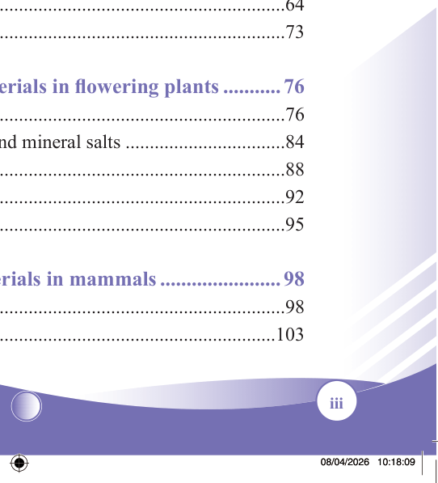

iii
Student’s Book - Form Two

Biology for Secondary Schools
Table of Contents
Acknowledgements........................................................................................v
Preface.......................................................................................................... vi
Chapter One: Nutrition in animals ...................................................1
Concept of nutrition in animals.......................................................................1
Nutrients..........................................................................................................5
Balanced diet ................................................................................................14
Nutritional requirements for different groups of people ..............................16
Nutritional deficiencies and disorders...........................................................20
Properties of food nutrients ..........................................................................24
Revision exercise 1........................................................................................35
Chapter Two: Digestive system........................................................38
The digestion process ...................................................................................39
The digestive system of ruminants ...............................................................50
Disorders and diseases of human digestive system ......................................53
Revision exercise 2........................................................................................60
Chapter Three: Transport of materials in living organisms..........63
Concept of transportation of materials..........................................................63
Ways of transportation of materials ..............................................................64
Revision exercise 3........................................................................................73
Chapter Four: Transport of materials in flowering plants............76
The vascular system......................................................................................76
Absorption and movement of water and mineral salts .................................84
Transpiration .................................................................................................88
Guttation .......................................................................................................92
Revision exercise 4........................................................................................95
Chapter Five: Transport of materials in mammals........................98
The mammalian heart ...................................................................................98
Blood vessels ..............................................................................................103


08/04/2026 10:18:09